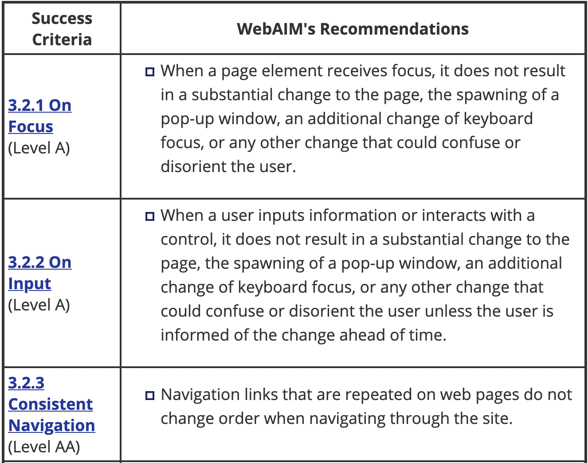
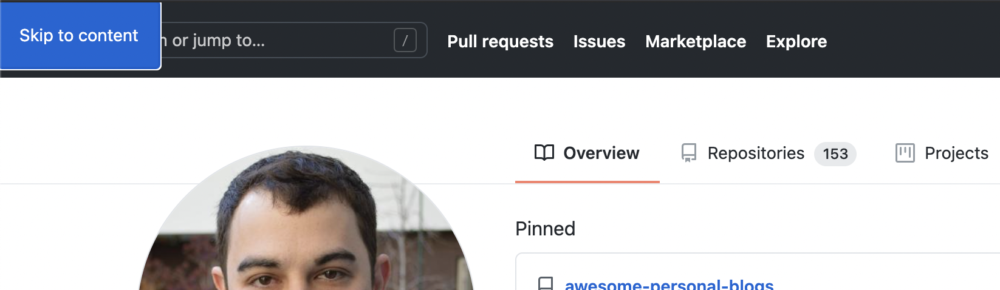
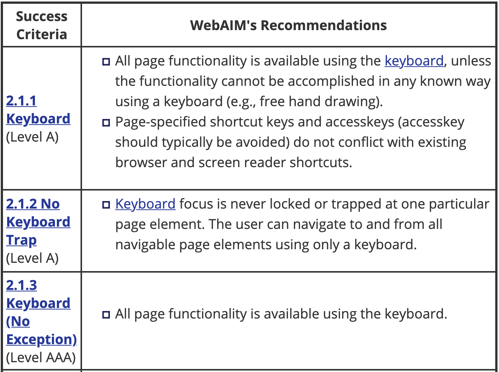

Focus Management
Keyboard only users
As users navigate around using only the keyboard, focus rings provide a necessary clue as to the currently active item.
See the Pen :focus selector example by Judith (@jrohatiner) on CodePen.
Keyboard Shortcuts
Keyboard shortcuts are another curb cut example. Sites like Twitter and Facebook offer keyboard shortcuts for almost any action which are great for both keyboard only users and power users!
Skip links
Skip links help users skip over large headers and navigation and jump right into the "main" content of your site. When a user hits tab for the first time, a button will appear and offer users to jump right to the main section.
Github
NYTimes

How to make a skip link
- Create an anchor with the body "Skip to content"
- Prepend it to the body of your website
- Make it visually hidden
- Give it a focus state which makes it visible
Tab Navigation
You can use the tab key to navigate to the next tabbable item and shift + tab to navigate to the previous item.
Tabbable elements include:
<a>
- <button>
- <input>
- <select>
- <textarea>
- <iframe>
Here is a list of some focusable elements
- a with href attribute
- button
- input (not hidden types)
- select
- textarea
- iframe
- Any element with tabindex (value >= 0)
- Any element with contenteditable attribute
Making an element tabbable
You can add the tabindex attribute to any element like this:
<div tabindex="0">I'm focusable</div>
Tabindex values
- a negative value means that the element should be focusable, but should not be reachable via sequential keyboard navigation;
- 0 means that the element should be focusable and reachable via sequential keyboard navigation, but its relative order is defined by the platform convention;
- a positive value means should be focusable and reachable via sequential keyboard navigation; its relative order is defined by the value of the attribute: the sequential follow the increasing number of the tabindex. If several elements share the same tabindex, their relative order follows their relative position in the document.
Active Element
Sometimes, especially on single page applications, it's helpful to store the currently focused element before a page transition so you can return to it later.
// A modal is about to be opened
// Store the current news item
const currentItem = document.activeElement;
// Open the modal
// On modal close, refocus on the news item they had open
currentItem.focus()
Tab trapping
Another useful concept is tab trapping. Consider opening a modal on a page which contains a form. A keyboard only user will want to tab around the form but unless we help, tabbing while focused on the last form element will send us all the way back to the main document.
for an example modal.
Exercise 4
Let's practice making skip links together in exercise 4.